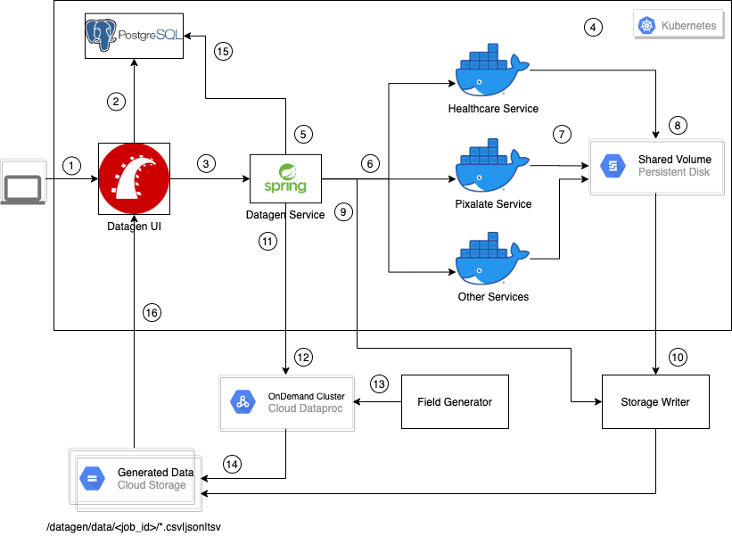

Problem
To generate a large volume of synthetic data which can be used for training vertical specific machine learning models
Challenges
- Generate large volumes of data in a distributed environment
- Support data generation in different formats
- Generate vertical specific data. For example, Healthcare, Advertising verticals
Tools
-

Ruby on Rails
-
Spring Framework
-

Google Storage
-

Google BigQuery
-
Google Kubernetes
-

Google Cloud Dataproc
Solution

- JSON schema for synthetic data generation is created using Datagen user interface
- Datagen Service coordinates synthetic data generation
- Synthetic Healthcare data is generated using Healthcare service
- Synthetic Pixalate data is generated using Pixalate service
- Synthetic Mobile app-ads.txt data is generated using AppAdsText service
- Data generation also happens for Salesforce datatypes
- All datagen services are dockerized and run in a Kubernetes cluster environment
- Generated data are stored in Google Cloud Storage